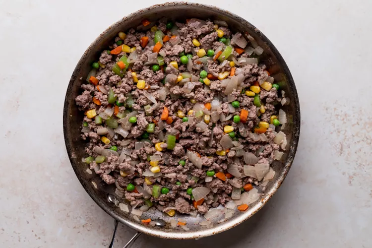
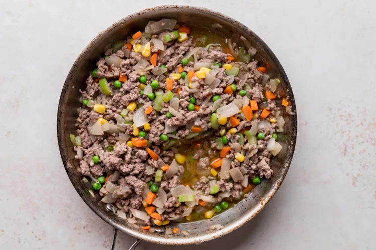
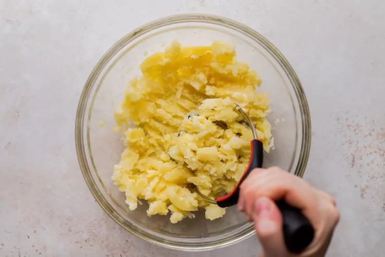

Shepherd's pie comes to us from England,
and is traditionally made with lamb or mutton.
Here in the states we are more of a beef eating culture than a lamb eating one,
and when one is served "shepherd's pie" here,
it is most often made with ground beef.
Place the peeled and quartered potatoes in medium sized pot.
Cover with at least an inch of cold water.
Add a teaspoon of salt. Bring to a boil, reduce to a simmer,
and cook until tender (about 20 minutes).
While the potatoes are cooking, melt 4 tablespoons of the butter in a large sauté pan on medium heat.
Add the chopped onions and cook until tender, about 6 to 10 minutes.If you are including vegetables,
add them according to their cooking time. Carrots should be cooked with the onions,
because they take as long to cook as the onions do. If you are including peas or corn,
add them toward the end of the cooking of the onions, or after the meat starts to cook, as they take very little cooking time.
While the potatoes are cooking, melt 4 tablespoons of the butter in a large sauté pan on medium heat.
Add the chopped onions and cook until tender, about 6 to 10 minutes.
If you are including vegetables, add them according to their cooking time.
Carrots should be cooked with the onions, because they take as long to cook as the onions do.
If you are including peas or corn, add them toward the end of the cooking of the onions,
or after the meat starts to cook, as they take very little cooking time.
Add ground beef to the pan with the onions and vegetables. Cook until no longer pink. Drain the pan of excess fat, i f necessary (anything more than 1 tablespoon). Season with salt and pepper. Add the Worcestershire sauce and beef broth. Bring the broth to a simmer and reduce heat to low. Cook uncovered for 10 minutes, adding more beef broth if necessary to keep the meat from drying out. Taste the cooked filling and, if needed, add more salt, pepper, Worcestershire, or other seasonings of your choice.
 When the potatoes are tender, drain well and return to the pot. Add the remaining 4 tablespoons of butter. Mash until smooth and creamy. Season with salt and pepper to taste.

Spread the cooked filling in an even layer in a large baking dish (such as a 9 x 13-inch casserole).
Spread the mashed potatoes over the top of the ground beef. Rough up the surface of the mashed potatoes with a fork
so there are peaks that will get well browned. You can even use a fork to make creative designs in the mashed potatoes.
Place the casserole dish in the preheated oven and bake until the top is golden brown and the filling is bubbling around the edges, about 20 to 25 minutes.
If you want a more deeply browned top, you can place the pie under the broiler for 2 to 3 minutes, watching carefully to prevent burning.